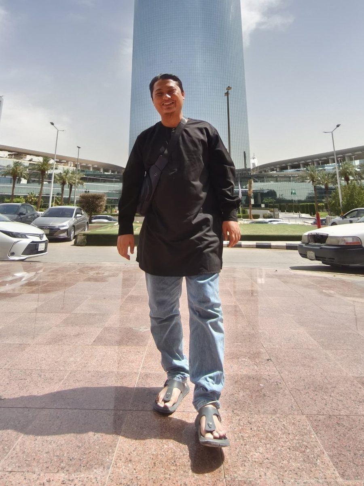

Tamim
Dahri.
Aktivis tanah, pembina perisian dan usahawan. Saya menjadikan data tanah sesuatu yang boleh dibaca, difahami dan dipertahankan oleh rakyat.
Land activist, software builder and entrepreneur. I make land data something ordinary people can read, understand and defend.

Tanah bukan sekadar harta. Ia amanah.
Land is not just property. It is a trust.
Saya mewakili Pertubuhan Literasi Tanah, sebuah pertubuhan yang membantu orang ramai memahami status, sempadan dan hak ke atas tanah mereka.
I represent Pertubuhan Literasi Tanah (Land Literacy Society), which helps the public understand the status, boundaries and rights attached to their land.
Saya pengasas bersama tanahmalaya.org dan pengasas tanahmalaya.com. Antara usaha utama kami ialah sistem GIS tanah rizab Melayu: peta interaktif yang menghimpunkan data rizab supaya sesiapa sahaja boleh menyemaknya sendiri.
Agenda jangka panjang saya mudah: beli, bersihkan dan wakafkan tanah, supaya tanah umat kekal produktif dan terpelihara untuk generasi akan datang.
Di luar kerja tanah, saya membina perisian, sistem IoT dan perniagaan. Kemahiran itu yang saya bawa ke dalam perjuangan ini.
I co-founded tanahmalaya.org and founded tanahmalaya.com. Our flagship work is a GIS of Malay reserve land: an interactive map that brings reserve data together so anyone can check it for themselves.
My long-term agenda is simple: buy, clean up and endow (wakaf) land, so that community land stays productive and protected for future generations.
Outside land work, I build software, IoT systems and businesses, and I bring those skills to this cause.
Data dahulu, kemudian suara.
Data first, then a voice.
GIS Tanah Rizab Melayu
Malay Reserve Land GIS
Platform digital yang menggabungkan data tanah, peta interaktif dan analisis spatial tentang status, sempadan dan guna tanah rizab Melayu. Maklumat yang dahulunya tersimpan dalam warta dan fail kini boleh dilihat di atas peta.
A digital platform that combines land data, interactive maps and spatial analysis of Malay reserve land: its status, boundaries and use. Information once buried in gazettes and files can now be seen on a map.
Buka petaOpen the map ↗Pertubuhan Literasi Tanah
Mendidik orang ramai tentang hak, status dan prosedur tanah, dan membantu pemilik tanah berurusan dengan pihak berkuasa.
Educating the public on land rights, status and procedures, and helping landowners deal with the authorities.
Pemetaan tanah wakaf
Mapping wakaf land
Membawa pendekatan GIS yang sama kepada tanah wakaf, supaya setiap lot wakaf boleh dikenal pasti, dipantau dan dimanfaatkan.
Bringing the same GIS approach to wakaf (endowment) land, so every wakaf lot can be identified, monitored and put to good use.
Enakmen Rizab Melayu
Malay Reservation Enactments
Membandingkan enakmen rizab Melayu setiap negeri, dengan cadangan untuk menyelaras dan memperkukuh perlindungan yang masih lemah.
Comparing each state's Malay Reservation Enactment, with proposals to harmonise them and strengthen the weaker protections.
Cadangan RCI pencerobohan tanah
Proposed RCI on encroachment
Menggesa Suruhanjaya Siasatan Diraja untuk meneliti pencerobohan tanah dan pembinaan tanpa kebenaran, termasuk kesannya terhadap hasil negeri.
Calling for a Royal Commission of Inquiry into land encroachment and unauthorised construction, including their cost to state revenue.
Perkara yang saya bina.
Things I build.
-
01
gerantanah.comTeknologi tanahLand tech
Projek digital berkaitan geran dan maklumat tanah, sebahagian daripada usaha menjadikan urusan tanah lebih telus.
A digital project around land titles and land information, part of the push to make land matters more transparent.
gerantanah.com ↗ -
02
SyumulReligion as a Service
Platform Islamik yang menyatukan halal, wakaf, qurban, solat, al-Quran, ustaz on demand dan pelancongan Muslim. Turut membina app white-label untuk organisasi.
An Islamic platform bringing together halal, wakaf, qurban, prayer, Quran, on-demand ustaz and Muslim travel. Also builds white-label apps for organisations.
syumul.com ↗ -
03
Cameron StrawberrySejak 2020Since 2020
Penghantaran strawberi segar dari ladang di Cameron Highlands terus ke pelanggan di sekitar Lembah Klang setiap minggu.
Fresh strawberries from a Cameron Highlands farm, delivered weekly to customers across the Klang Valley.
cameronstrawberry.com ↗ -
04
Destroy a BuildingGame RobloxRoblox game
Game perobohan bangunan di Roblox: projek kreatif yang dibina sendiri, lengkap dengan komuniti pemain.
A building-demolition game on Roblox: a self-built creative project with its own player community.
Dalam media.
In the press.
“Tanah bukan harta dunia, tapi amanah”
Tentang agenda jangka panjang saya untuk membeli, membersih dan mewakafkan tanah bagi menangani isu pencerobohan.
On my long-term agenda to buy, clean up and endow land as a way to tackle encroachment.
BacaRead (Malay) ↗Wawancara: tanah dan persoalan cinta negara
Interview: land and the question of patriotism
Perbualan panjang bersama Sinar Harian tentang isu tanah dan perjuangan saya.
A long-form conversation with Sinar Harian about land issues and my work.
Tonton / bacaWatch / read (Malay) ↗Cadangan RCI terhadap pencerobohan tanah
A call for an RCI on land encroachment
Laporan tentang cadangan saya supaya Suruhanjaya Siasatan Diraja meneliti pencerobohan tanah dan kesannya kepada hasil negeri serta pembangunan.
Coverage of my proposal for a Royal Commission of Inquiry into land encroachment and its impact on state revenue and development.
BacaRead (Malay) ↗